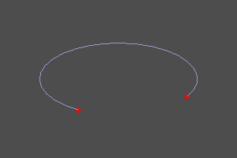

Анализ кривых
Теоретическая сводка.
Общепризнанным методом задания кривых в системах вычислительной геометрии является параметрический метод.
Согласно ему кривая задана непрерывным отображением скалярного множества [U_min, U_max] на пространство заданной мерности. P = F(U) : P ∈ R^N, U ∈ R^1[U_min, U_max], где F - функтор отображения, а N - мерность пространства.
На практике это означает, что любая точка P на кривой имеет соответствующее ей значение скалярного параметра U. Следует понимать, что в общем случае функция связывающая параметр U в точке P и длину кривой из точки начала O до точки P не линейна. Поэтому вычисления над кривой в терминах длин требуют применения специального математического аппарата (реализованного в виде методов настоящей библиотеки).
Классы кривых.
В ZenCad существуют следующие классы реализующие методы анализа кривых:
- Edge (порождается инструментами segment, interpolate, bezier, bspline и т.д.)
- Curve3 (NotReleased)
- Curve2 (NotReleased)
Крайние точки и диапазон конечной кривой.
Определение концевых точек конечных кривых.
Метод endpoints возвращает объекты крайних точек. Параметры этих точек могут быть запрошены методом range.
curve.endpoints() -> point3, point3
curve.range() -> float, float
crv = circle(r=5, wire=True, angle=deg(270))
s,f = crv.endpoints()
disp([crv, s, f])

curve.length()
Вернуть длину кривой между параметрами U_min и U_max.
curve.d0(u)
Вернуть точку, соответствующую параметру u.
curve.d1(u)
Вернуть точку и вектор первой производной, соответствующие параметру u.
curve.linoff(u, dist)
Вернуть параметр точки, смещенной на длину dist относительно точки задаваемой параметром u.
curve.linoff_point(u, dist)
Вернуть точку, смещенную на длину dist относительно точки задаваемой параметром u.
alternate: curve.d0(curve.linoff(u,dist))
Равнораспределённые точки кривой.
Вернуть массив точек, равномерно распределённых на кривой. Параметр npnts - задаёт количество точек. Параметры umin, umax задают диапазон на множестве параметров в котором будет проведена процедура распределения.
curve.uniform(npnts, umin=U_min, umax=U_max) -> list(float) # Список параметров
curve.uniform_points(npnts, umin=U_min, umax=U_max) -> list(point3) # Список точек.
crv = circle(r=5, wire=True, angle=deg(270))
params = crv.uniform(8, math.pi/4, math.pi)
print(params) # [0.7853981633974483, 1.121997376282069, 1.4585965891666897, 1.7951958020513104, 2.131795014935931, 2.4683942278205517, 2.8049934407051724, 3.141592653589793]
pnts = crv.uniform_points(8, math.pi/4, math.pi)
disp(pnts + [crv])